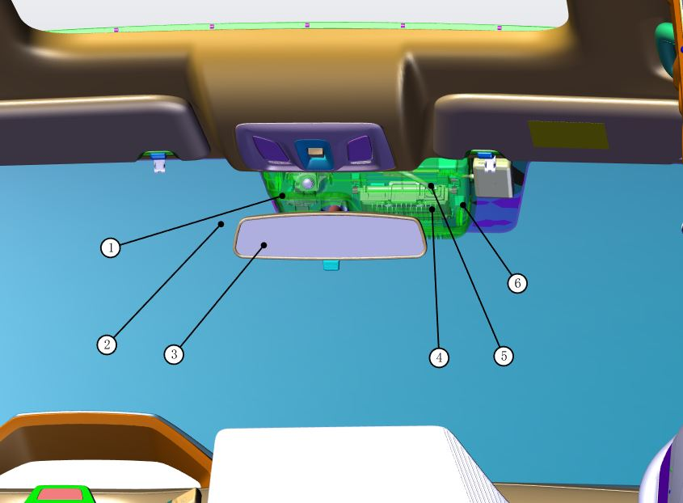
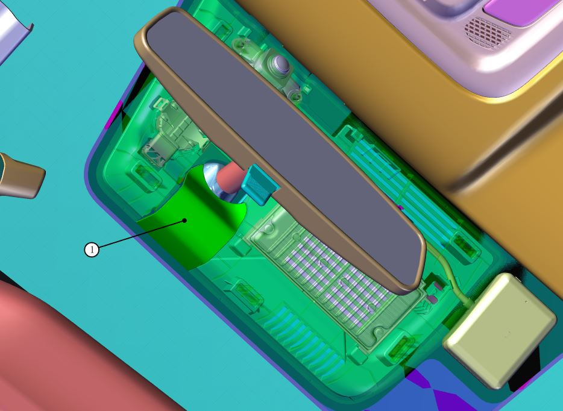
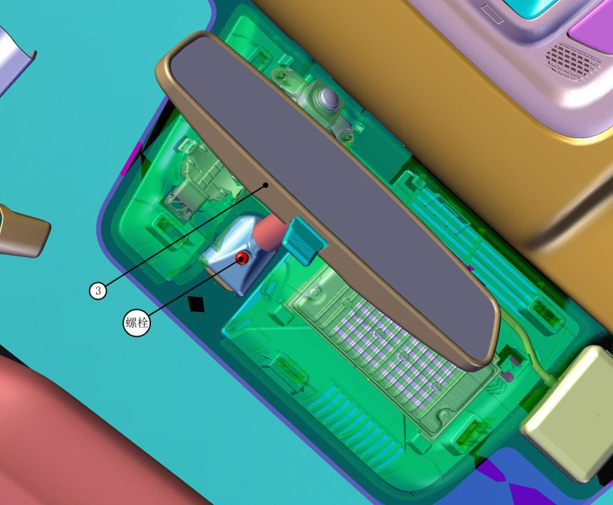
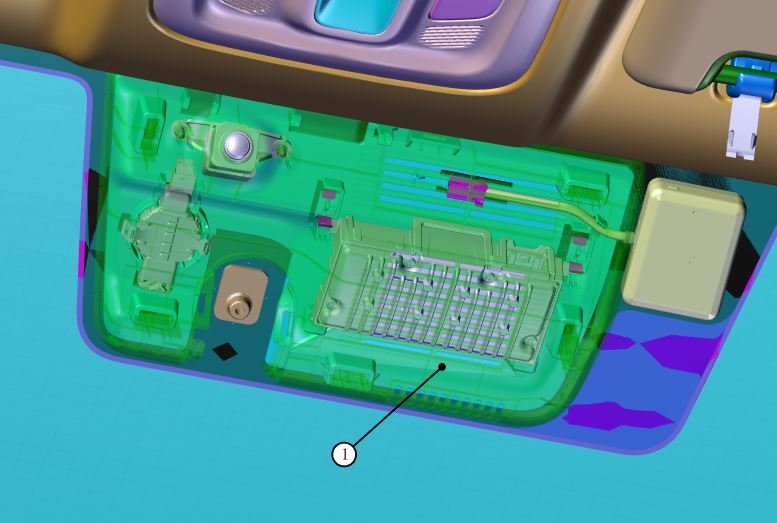
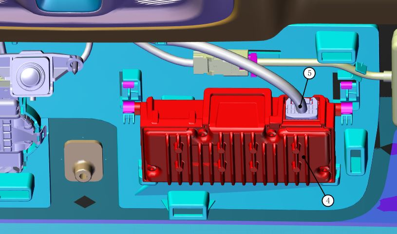

Инструменты для снятия и установки
| 1 | Торцевая головка 8 mm и трещоточный ключ |
| 2 | Пластиковая лопатка |
Снятие
1. С помощью лопатки поддеть край декоративной накладки движением наружу и снять частичную пластиковую крышку накладки, показанной на рисунке 1

2. С помощью торцевой головки 8 mm и трещоточного ключа выкрутить болт, показанный на рисунке, и снять салонное зеркало заднего вида ③;

3. С помощью лопатки слегка поддеть край декоративной накладки; после высвобождения фиксаторов по периметру снять декоративную накладку ①

4. Снять контроллер;
Сначала отсоединить разъем жгута проводов контроллера ⑤, затем снять контроллер ④: взявшись за оба конца контроллера, сначала потянуть контроллер назад и вниз, чтобы развести металлические пружинные пластины; когда пружинные пластины разойдутся на ширину, достаточную для прохода установочных штифтов контроллера, с небольшим усилием потянуть контроллер вниз для его извлечения. Соблюдайте осторожность, не применяйте грубую силу при снятии; повреждение кронштейна приведет к необходимости замены всего ветрового стекла в сборе

Установка
Установка выполняется в порядке, обратном снятию. Установить два передних захвата в пазы кронштейна, затем вдавить два штифта в фиксаторы кронштейна. После установки убедиться в плотном прилегании декоративной накладки к ветровому стеклу.